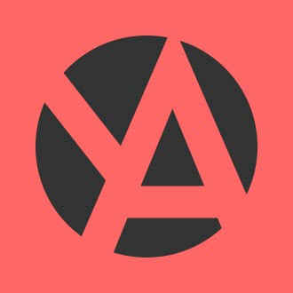
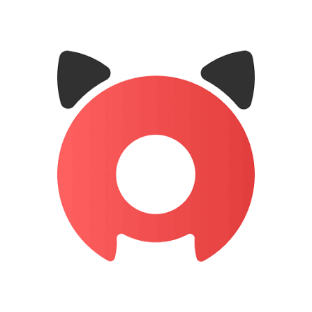

AniDa • Единый лаунчер аниме
Твой личный агрегатор аниме-платформ. Открыл AniDa — выбрал сервис — смотришь. Без браузера, без лишнего шума.
v1.1.0 • Windows 10+ • Android 8+ • iOS — скоро
Возможности
AniLibria, YummyAnime, Jut.su, Shikimori и другие — все любимые платформы в одном месте с поиском и фильтрами.
Сайты открываются внутри AniDa: назад, вперёд, обновить — как в браузере, только без вкладок.
Баннеры режутся, кнопки «Пропустить» жмутся сами, видеореклама глушится и проматывается.
От огненного Ember до чистого Minimal Dark — плюс своя палитра и отдельный формат для телефона.
Друзья видят, что ты смотришь: статус обновляется при смене сервиса. Только на ПК.
Встроенная офлайн-игра для телефона — скоротать время в дороге без интернета и рекламы.
Каталог

YummyAnimeru.yummyani.me
Anixartanixart.tvКак это работает
Установщик для Windows или APK для Android. iOS — через облачную сборку.
Открой каталог, добавь любимое в избранное — оно сохраняется.
Сайт открывается внутри AniDa. Реклама режется, история ведётся.
Скачать
Установщик • 92.7 МБ • Windows 10+
Скачать .exeAPK • 13.3 МБ • Android 8+
Скачать .apkСборка через облако — инструкция внутри проекта
СкороAndroid: разреши установку из неизвестных источников. Windows: если SmartScreen ругнётся — «Подробнее → Выполнить в любом случае», установщик без коммерческой подписи.
FAQ
AniDa не собирает данные и ничего не отправляет на серверы. Антивирусы иногда реагируют на неподписанные установщики — добавь папку в исключения, это стандартная практика для инди-софта.
Аниме-сайты запрещают встраивание в приложения. Поэтому на телефоне AniDa открывает их в системном окне поверх — с мобильной вёрсткой, куками и авторизацией.
Баннеры, всплывашки и кнопки «Пропустить» — да, автоматически. Видеореклама без меток, идущая с тех же серверов, что и видео, — глушится и проматывается, но убрать её на 100% технически нельзя нигде.
Проект готов, сборка идёт через облачный Mac. Следи за разделом «Скачать».
Нужен запущенный десктопный Discord, включённое «Отображать текущую активность» и статус «Подключено» в Настройках AniDa.